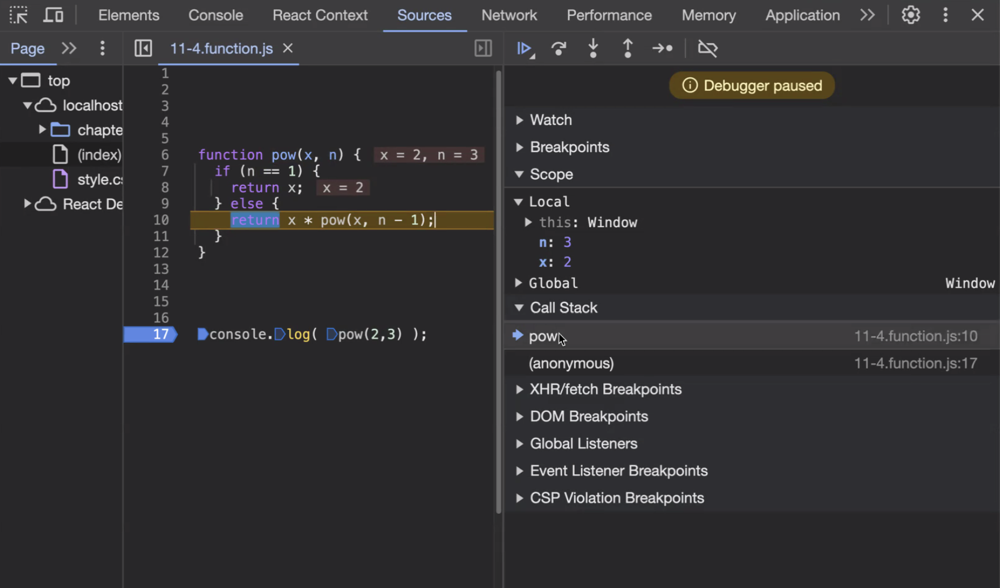
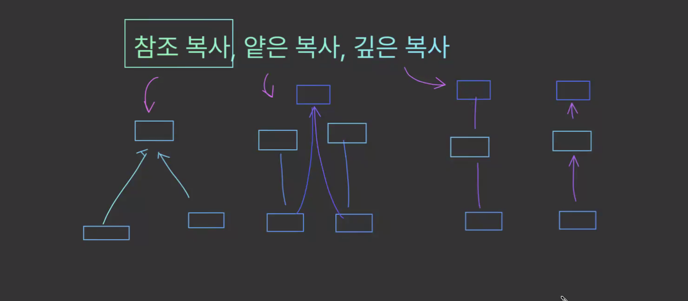

javascript day8
배열
-
Array(5)
- length가 5인 빈 배열 반환됨
- 배열이 아닌 애를 배열로 만들어서 문제 풀 때 사용함
-
Array(3).fill(null) :
[null, null ,null]
- 이렇게 배열을 만들면 배열 메서드 사용 가능
- 예시
-
Array(powCount).fill(numeric).reduce((acc) => acc *
numeric)
재귀와 스택
- 훨씬 더 중요한 내용이 많기 때문에 건너뜀
-
재귀 사용 이유
- 어떤 문제를 해결하기 위해 내가 필요해 ..! 오 ~
-
function a (){ retrun 1 } const x = 10
x * a() 1) 함수 실행 2) x * 1
-
pow 함수를 재귀함수로 변경 해보자고 (어려움쓰)
return x * pow(x, n - 1);- 1) pow 함수 실행 2) 곱하기
-
함수는 호출될 때 마다 하나의 실행 컨텍스트 생성함
> 또 다른 실행 환경 형성된 것
-
함수 안에 새로운 실행 환경이 형성되면, 함수 밖의 실행 환경은
멈춰 ! ✋
-
중지된 함수와 연관된 실행 컨텍스트는 "실행 컨텍스트 스택" 자료
구조에 저장 됨
return x * pow(x, n - 1);-
pow(2,3) 계산하다가 pow(2,3-1) 함수 호출되어 새로운 실행환경이
만들어짐.
> 외부의 pow(2,3)은 멈춰 ✋
-
pow(2,2) 계산하다가 pow(2,2-1) 함수 호출되어 새로운 실행환경이
만들어짐.
> 외부의 pow(2,2)은 멈춰 ✋
- pow(2,1) 계산하려니까 x가 1이라서 2를 return함
- pow(2,2)를 이제 실행하러 가보자 ~! => x * 2 = 4
- pow(2,3)를 이제 실행하러 가보자 ~! => x * 4 = 8
- Last in First out : 마지막에 들어온 작업이 제일 먼저 나감
- call stack은 환경보다 더 넓은 개념
-
call stack에 실행 컨텍스트를 쌓아서 순서대로 일처리를 함
(pow함수에선 함수 context를 쌓은 것)
-
n개만큼 환경이 쌓임 => 성능 저하
=> 하지만 유지보수, 코드 가독성에 측면에선 재귀 함수가 적합함
- 관련 stack, que는 배열에서 나옴
- 개발자 도구에서 코드의 실행 흐름을 제어하며 관찰하기
- 개발자도구 - souces 캡쳐화면 참고
-
자바스크립트에 대한 이해가 높아야 재귀 함수를 만들 수 있을 것 ~
-
지금 단계에선 재귀 필요하다면 검색해서 잘만든거 가져와서 써라잉
-
콘솔에서 어떻게 작동하는지 꼭 확인할 것

객체
-
객체요?
- 다양한 데이터를 담을 수 있음
-
중괄호 안에는 ‘키(key): 값(value)’ 쌍으로 구성된
프로퍼티(property) 를 여러 개 넣을 수 있음
- 키 : 문자형, 심볼 가능 (변수인 경우 대괄호 표기법 참고)
- 값 : 모든 자료형 가능
-
함수도 사실 객체
- 함수이기 이전에 객체이기 때문에 프로퍼티 지정 가능
function a (){} a.value = 10
-
리터럴과 프로퍼티
- 프로퍼티 추가
user.age = 30
- 프로퍼티 삭제
delete user.age
-
불가능한 프로퍼티 이름 :
likes-birds, like birds
-
가능한 프로퍼티 이름 :
'likes-birds', 'like birds'
- 상수인 객체 수정하기 : 가능
- 변경이 불가능한 것은 객체 자체
- 상수의 프로퍼티를 변경하는 것은 가능
- 프로퍼티까지 변경 못하게 하려면 동결시키면 가능
-
대괄호 표기법 (⭐️)
- 점 표기법 : '유효한 변수 식별자'인 경우에 사용
-
대괄호 표기법 : '유효한 변수 식별자'가 아닌 경우에 사용
>
배열 인덱스도 포함됨
-
변수의 키 값 접근할 때도 대괄호 표기법 사용
1) let key = "likes birds";
user[key] = true;
2)
const removeProperty = (obj, key) => (obj[key] = null)
- 계산된 프로퍼티
-
변수를 키로 동적으로 받아와서 사용하거나 결합 가능
1) [fruit]: 5
2) [fruit + 'Computers']: 5
- 함수 안에서 객체를 만들어야 할 때 많이 사용
-
단축 프로퍼티
- 진짜 짱많이 씀
- 키와 밸류의 이름이 같다면 하나만 작성하면 됨
- 함수 안에서 객체를 다시 정의할 때 주로 사용함
-
프로퍼티 이름의 제약사항
-
‘in’ 연산자로 프로퍼티 존재 여부 확인하기
-
프로토타입의 프로퍼티까지 모두 반환되기 때문에 hasOwnProperty
빌려써야 함
-
‘for…in’ 반복문
- 객체 정렬 방식 : 객체는 순서가 중요하지 않음
- 따라서 순서가 중요하다면 배열 사용
-
순수 객체
- 순수 객체 : 일반 객체 (일반 객체 X : Array, Date, Error)
- 순수 함수 : 함수는 1가지 일만 담당
-
없는 키값에 접근
- 에러가 아닌 undefined를 반환
-
없다면 조건 처리 필요함
if(!authUser.asdfasdf) 에러 처리
- 메서드가 없으면 에러남
-
구조 분해 할당 (⭐️⭐️⭐️⭐️⭐️)
- 배열 구조 분해 할당
const [a, b, c, d] = [10, 100, 1000, 10000]-
> 순서 : 절대 못바꿈 (배열에서 순서가 매우 중요하기 때문에)
- > 변수 이름 : 변경 가능
-
배열이 몇개인지 모를 땐 ?
const [n1, , ...rest] = [10, 20, 30, 40, 50, 60]
-
>
, , ,_, : 원래는 20의 자리인데, 20
제외하고 나머지를 rest로 받음
-
유사 배열에도 사용 가능
ㄴ
const [first, second] =
document.querySelectorAll('span')
- 객체 구조 분해 할당 (⭐️)
-
const { 박지성, 김보미, 이경민, 전희선 } = salaries;
- > 순서 : 상관 없음
-
> 변수 이름 : 변경 가능 (키값:변경할변수명 - 키값을 변수명으로
찾기 때문에)
ㄴ
const { 김보미: 김, 박지성: 박, 이경민: 이, 전희선: 전 } =
salaries;
-
없으면 기본값 설정 가능
ㄴ
const {김보미:김=3000, 박지성:박, 이경민:이, 전희선:전,
도가현 = 20} = salaries
-
보통 함수 매개변수를 객체로 받고 함수 안에서 가공처리할 때 많이
사용함
참조에 의한 객체 복사
-
제일 뽀인트
-
참조 복사 | 얕은 복사 | 깊은 복사

-
참조 복사가 뭔디요
- 객체 vs 원시타입
- 원시값 : 값 그대로 복사 - 값이 저장/할당되어 복사됨
-
객체 : 참조에 의해 복사 - 객체가 저장되어 있는 메모리 주소인
참조값이 저장됨
- 참조 복사
-
let user = { name: 'sozzang' }
let admin = user
- admin -> { name: 'sozzang' } <- user
-
user.name = 'merong' 바꾸면
admin.name도 변경됨
ㄴ (동일한 메모리 주소)를 가리키는 화살표가 복사된 것이기 때문에
user === admin : 동등, 일치 모두 같음
- 원시타입의 복사
-
let user = 'sozzang'
let admin = user
- admin -> 'sozzang', user -> 'sozzang'
admin: 'merong' 변경해도 user는 값 그대로
-
얕은 복사
-
객체는 참조에 의한 복사로, 원본이 수정되면 모든 변수에 할당한
객체도 수정됨
-
각자의 메모리 주소를 가진 독립적인 객체로 복사해보자 (like
원시형)
- 1) for .. in문
-
빈 객체를 만들어서 원본 객체의 모든 프로퍼티를 순회하여 복사
-
let user = { name: "John", age: 30 };
let clone = {}
for (let key in user) { clone[key] = user[key]; }
- 2) Object.assign()
-
let user = { name: "John" };
let permissions1 = { canView: true };
let permissions2 = { canEdit: true };
Object.assign(user, permissions1, permissions2);
-
중복된 프로퍼티가 있는 경우, 뒤에 있는 객체의 값을 덮어쓰기함
ㄴ permissions2 우선순위 > permissions1 우선순위
-
새로운 빈 객체를 만들어서 assign
ㄴ let clone = Object.assign({}, user);
ㄴ 이 방법을 더 많이 사용함
- 3) 전개 연산자(...)
const spreadObj = { ...messenger };- 젤 많이 씀요 ~
- 2depth라면, 얕은 복사 2번하면 중첩 객체까지 복사 가능함
-
얕은 복사 2번 성능 > cloneDeep함수 : 함수는 실행 환경을 만드니까
- 객체 합성 (mix in)
-
1)
Object.assign(user, permissions1, permissions2)
-
2)
const spreadCssMap = { ...cssMapA, ...cssMapB }
-
깊은 복사 : 중첩 객체 복사
-
얕은 복사를 하면, 중첩 객체는 참조에 의한 복사가 됨 (으이그~)
-
let user = { name: "John", sizes: { height: 182, width: 50 }
};
- 1) lodash의 메서드인 _.cloneDeep(obj)을 사용
- 2) 내가 만든다면? 재귀함수로 Object.assign() 고고씽